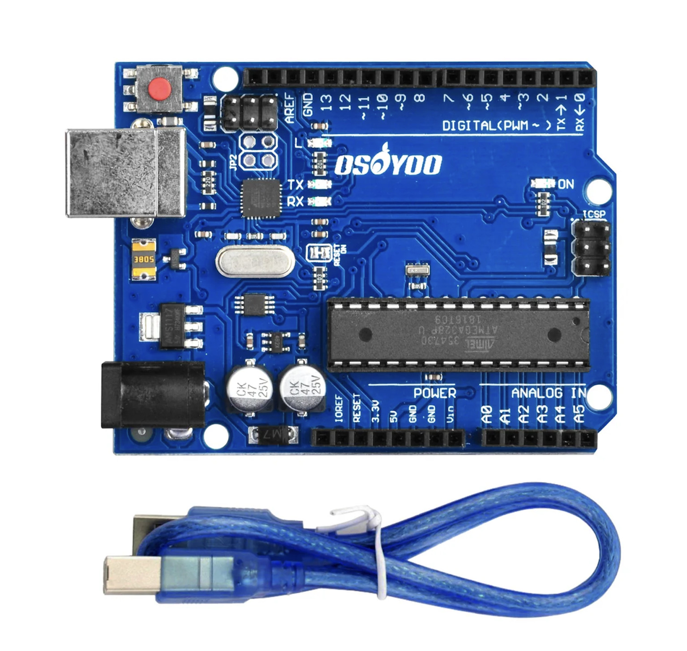

Liste non ordonnee (ul)
- Carte mere
- Processeur
- Capteur ultrason
- Pompe a eau
Accueil du projet scolaire avec 3 pages reliees.
Ce mini-site presente des exemples de materiel informatique et de projet embarque. L image ci-dessous est cliquable et ouvre une source externe.

Source image: photo locale du dossier images/arduino.jpg.
Aller directement au tableau (lien ancre interne).
| Composant | Role | Exemple |
|---|---|---|
| CPU | Executer les instructions | Ryzen 5 5600X |
| Capteur | Mesurer une distance | HC-SR04 |
| Actionneur | Deplacer de l eau | Mini pompe 5V |
Liens internes: Page My Computer, Page Bonjour Mr Duffaud.
Liens externes: W3Schools CSS, OpenWeb Cascade CSS.
Sources de reference: W3Schools (proprietes CSS), OpenWeb (cascade CSS), et documentation technique generale sur Wikipedia.